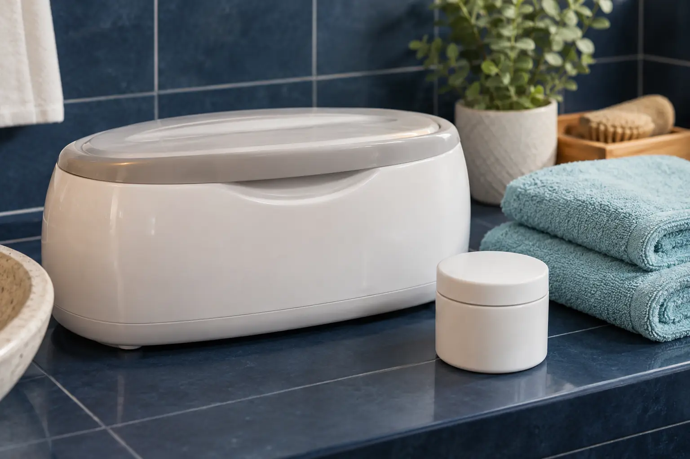

Parafino procedūra rankoms ar pėdoms: šildomas ir šaltas variantas
Autorius: Madbeauty redakcija · Numatyta 2026 m. gruodžio 10 d. 16:00 (Lietuvos laiku)
ARAVIA pavyzdžiu paaiškiname, kuo skiriasi kremas-parafinas ir išlydytas kosmetinis parafinas, ir kaip palyginti rankų ar pėdų paslaugos apimtį.

„Šaltas“ ir šildomas parafinas gali reikšti skirtingas priemones. ARAVIA Professional sistemos pavyzdyje šaltas formatas yra kreminė priemonė, o šiltas – išlydytas kosmetinis parafinas. Taigi „šaltas“ čia nereiškia šalto vandens vonelės. Tai konkrečios gamintojo sistemos pavyzdys, o ne visoms paslaugoms taikoma procedūros instrukcija. Gamintojo šalto ir šilto parafino aprašas ir šalto kremo-parafino produkto pavyzdys padeda palyginti formatus, bet nenustato, kokį produktą ar paslaugos eigą renkasi konkretus teikėjas.
Ką palyginti paslaugos apraše
Vien žodis „parafinas“ nepasako nei priemonės formos, nei to, kokie kiti darbai įskaičiuoti. Patikrinkite šiuos keturis dalykus:
- Priemonė: ar aprašyta kreminė priemonė, ar kosmetinis parafinas, naudojamas išlydytas?
- Šiluma: ar siūlomas produktas šildomas pagal gamintojo nurodymus? Vien paslaugos pavadinimas nepateikia naudojimo instrukcijos.
- Zona: ar pasiūlymas skirtas rankoms, pėdoms, ar abiem?
- Apimtis: ar parafino ritualas parduodamas atskirai, ar nurodytas kaip manikiūro ar pedikiūro dalis?
Rankoms: atskiras ritualas ar manikiūro priedas?
„Parafino procedūra rankoms“ gali būti atskiras meniu punktas arba platesnės rankų priežiūros paketo dalis. Jei meniu parafino procedūrą pateikia atskirai, nelaikykite, kad į ją įeina manikiūras, nagų formavimas ar lakavimas. Jei parafinas nurodytas kaip manikiūro priedas, palyginkite, kokie manikiūro darbai įtraukti ir ar parafinas yra pasirenkamas papildomai.
Pėdoms: atskira paslauga ar pedikiūro dalis?
Pėdoms galioja tas pats apimties patikrinimas: atskiras parafino ritualas savaime nereiškia, kad įskaičiuotas pedikiūras. Peržiūrėtame Treatwell Vilniaus kategorijos pavyzdyje matyti skirtingi rankų ir pėdų pasiūlymai. Tai padeda palyginti meniu struktūrą, bet nepatvirtina vienodo produkto ar procedūros kiekviename salone.
Peržiūrėti Treatwell parafino paslaugų kategorijos pavyzdį
Trumpa palyginimo kortelė
Tarkime, lyginate du meniu įrašus. Tai iliustracinis pavyzdys, o ne konkretaus teikėjo pasiūlymas:
- „Parafino procedūra rankoms“: užsirašykite, kokia priemonė nurodyta, ir patikrinkite, ar aprašyti tik rankų priežiūros darbai, ar ir manikiūras.
- „Manikiūras su parafino ritualu“: patikrinkite, ar parafinas įtrauktas į nurodytą paslaugą, ar yra pasirenkamas priedas, ir kokie manikiūro darbai sudaro paketą.
- Pėdoms taikykite tą patį palyginimą: atskirkite „parafino procedūrą pėdoms“ nuo „pedikiūro su parafinu“ ir remkitės konkrečiai išvardytais darbais.
Tokia kortelė leidžia atskirti priemonės formatą nuo vizito apimties. Ji nenustato procedūros temperatūros, trukmės ar naudojimo būdo. Šiuos dalykus apibrėžia konkretaus produkto gamintojo instrukcija ir konkretaus teikėjo aprašas.
Kada kosmetinės procedūros aprašo neužtenka
Jei neramina pastebėtas nago ar odos pakitimas, kosmetinės paslaugos aprašas nėra sveikatos įvertinimas. Pirmiausia aptarkite rūpimą požymį su sveikatos specialistu. Amerikos dermatologų akademijos saugos rekomendacijos gali būti papildomas informacijos šaltinis; jos nėra Lietuvos teisės ar vietinių paslaugų taisyklių aprašas. AAD manikiūro ir pedikiūro saugos rekomendacijos
Prieš pasirinkdami, sulyginkite produkto formą, šildymą, priežiūros zoną ir įtrauktus kitus darbus. Jei meniu jų nepaaiškina, paprašykite tikslaus produkto pavadinimo ir paslaugos apimties paaiškinimo; nespręskite jų vien iš žodžio „šaltas“ ar „šildomas“.
Procedūrų aprašai kataloge: Parafino procedūra rankoms, Parafino procedūra pėdoms. Miestą ir realaus teikėjo pasiūlymą pasirinkite kataloge, kai tokia pasiūla pateikta.
Susiję gidai
Šaltiniai
- Treatwell · parafino ir rankų SPA pasiūlos variantai · www.treatwell.lt
- AAD · manikiūro ir pedikiūro sauga · www.aad.org
- ARAVIA Professional: šalto kremo-parafino produktas · aravia.ru
- ARAVIA Professional: šaltas ir šiltas parafinas · aravia-prof.ru